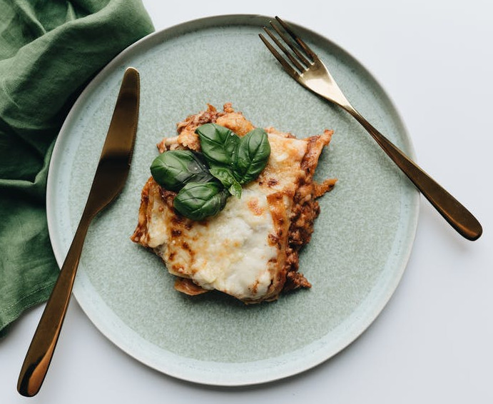

Lasagne alla Bolognese

Sure, you can just make a lasagna with jarred tomato sauce and
ricotta cheese when you have a mid week craving. But if you want to
do it the right way, the authentic Italian way, there's just no
substitute for using homemade béchamel and bolognese sauce. This is
also the perfect recipe for when you hear that whisper in the dark
saying "I'm sorry Jon".
Ingredients
- 4 tablespoons unsalted butter (2 ounces; 60g), plus more for
greasing baking dish
- 4 tablespoons all-purpose flour (1.25 ounces; 35g)
- 3 cups (700ml) whole milk
- Kosher salt and freshly ground black pepper
- Pinch freshly grated nutmeg
- 2 pounds (900g) fresh homemade plain egg or spinach pasta or
store-bought fresh lasagna noodles, or 2 (450g) boxes dry
lasagna noodles (see note)
- Vegetable oil, for greasing pasta
- 1 1/2 quarts (1.5L) warm ragù bolognese (choose either this
classic slow-cooked version, this extra-rich oven-baked version,
or this pressure-cooker version)
- 3 ounces (85g) Parmigiano-Reggiano cheese
Preparation
- In a small saucepan, melt butter over medium-high heat (do not allow it to brown). Add flour and whisk to form a paste. Continue to cook, stirring, until raw flour scent is gone, about 1 minute. Whisking constantly, add milk in a thin, steady stream, or in increments of a couple of tablespoons at a time, whisking thoroughly and getting into all corners of the pan to maintain a homogeneous texture. Sauce will initially become very thick, then get very thin once all the milk is added.
- Heat, stirring, until sauce comes to a simmer and begins to thicken slightly. Reduce heat to low and cook, stirring, until sauce is just thick enough to coat the back of a wooden spoon, about 3 minutes.
- Season with salt and pepper. Whisk in nutmeg. If any lumps form, simply whisk thoroughly to remove them and smooth out sauce, or use a hand blender or countertop blender if lumps are particularly large or tough. Use béchamel sauce right away, or press a piece of plastic wrap over surface of sauce to prevent a skin from forming and keep warm until ready to use. (Béchamel sauce can be cooled and stored in a sealed container in the refrigerator for several days. Reheat very gently on the stovetop or in a microwave to use.)
- If Using Homemade Pasta: Follow the recipe and instructions here through step 10 (you will end up with long sheets of fresh pasta), doubling the quantity to yield 2 pounds total (this will make more pasta than you will need, but it's best to have extra and avoid running out midway through assembly). Cut those sheets into roughly 8-inch-long rectangles.
- In a pot of salted boiling water, cook pasta, working in batches if necessary, until al dente (this will vary depending on the pasta you use, but for store-bought it's about 1 minute less than package instructions), then use a spider or mesh strainer to transfer immediately to a large ice bath to cool.
- Drain pasta well, then rub each sheet lightly on both sides with vegetable oil (to prevent sticking). You can hold the cooked pasta sheets for up to 3 hours, but if you're doing this, it's best to lay them out on a parchment-lined baking sheet, with layers of plastic wrap between the layers of pasta (once again, to prevent sticking).
- If Using No-Boil Pasta: Soak in warm water for 30 minutes to partially hydrate, then drain on paper towels or kitchen towels.
- To assemble and bake lasagna, preheat oven to 375°F (190°C). Grease a 9- by 13-inch baking dish with butter. Spoon a thin, even layer of ragù on bottom of baking dish, then lay down a layer of lasagna noodles; if's okay if they overlap somewhat, but you can cut any sheets that are too large to avoid excessive doubling up.
- Top pasta with another thin layer of ragù (thin enough that you can see the pasta through it in some spots). Drizzle a small amount of béchamel all over ragù, then top with a showering of grated Parmigiano-Reggiano. Repeat this layering process with pasta, ragù, béchamel, and grated cheese until baking dish is full; this should be about 6 layers. Finish with a top layer of pasta, then coat that with an even layer of the remaining béchamel sauce. Grate a final generous amount of cheese on top.
- Bake lasagna until bubbling and browned on top, about 35 minutes (placing a rimmed baking sheet under the baking dish is good insurance in case anything bubbles over). Let rest 10 minutes, then serve.